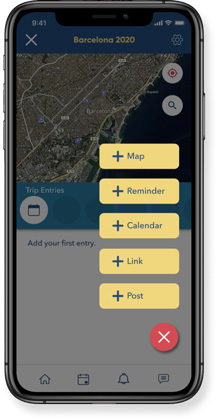
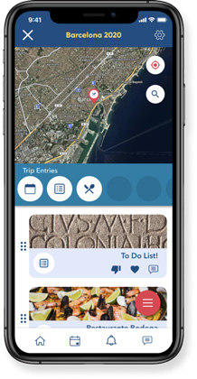
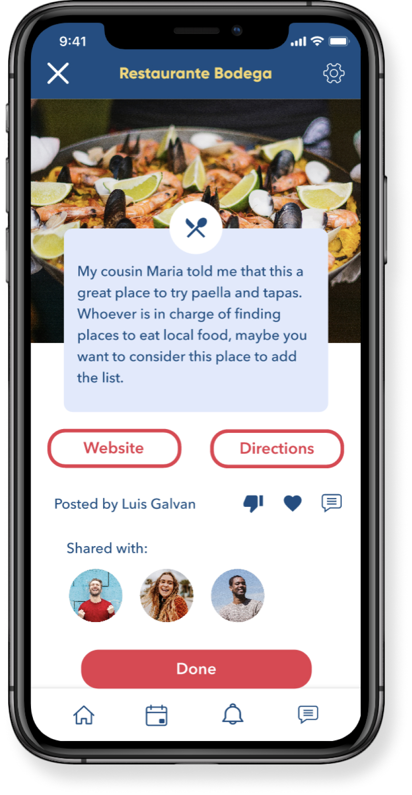
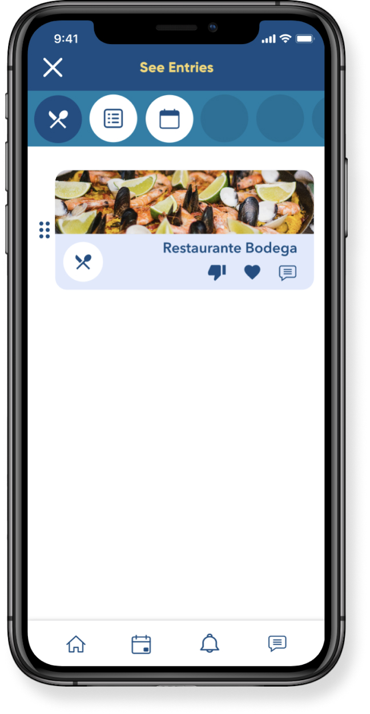
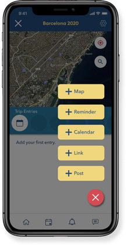
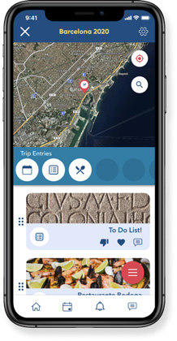
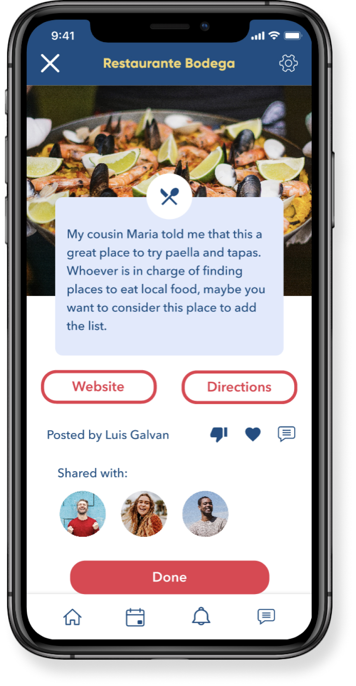
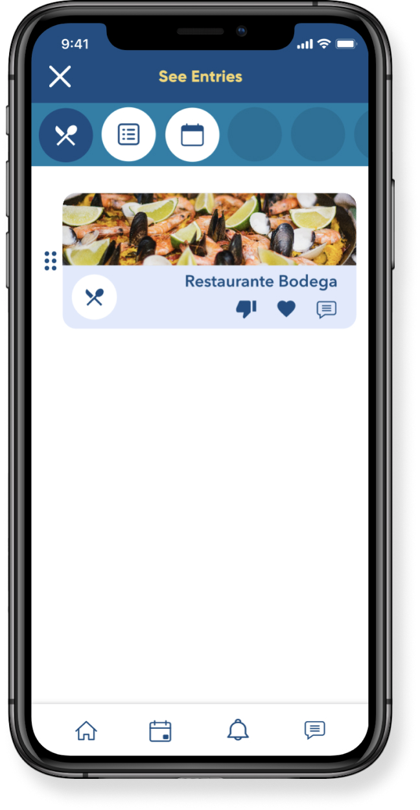

Plan. Collaborate. Enjoy!
Your go-to trip planning tool
Everything you and your travel buddies need in orderto plan your next trip. From your first travel idea, to your detailed day-to-day itinerary. Trot will help you every step of your journey.
See it in action!Overview
Duration
Eight Weeks
Problem
Travel enthusiasts need a tool that will help them organize their trip and keep their plan handy during their vacations in order to enjoy their time to the fullest.
- UX Design
- Visual Design
- Branding
Design Role

- Competitive Analysis
- User Survey
- User Personas
- User Stories & Flows
- Wireframes
- Wireframe Prototype
- Brand Style Guide
- Usability Testing
- Hi-Fi Prototype
Design Deliverables
- Figma
- Sketch
- Invision
- Draw.io
- UsabilityHub
- Zoom
Design Tools
Discovery Phase
User Surveys
Getting to know the users
To understand the target audience and pinpoint the problem focus, I created a user survey to understand the habits, motivations, and frustrations of potential users who self identified as travel enthusiasts.
User Research Findings
- Keep the information scattered through apps, emails, notes, etc.
- Keep the essential information in their inbox.
- Keep their information on cloud based organizer tools.
- Print the information related to their trip.
How do you keep your trip information organized?
90% of the people surveyed had never used a travel app before and the rest of the people had only used review-based apps which they didn’t use on a regular basis because they did not trust the review content on them.
- Ability to save information in the same place.
- Having a customizable map to save points of interest.
- Receiving reminders to my phone.
- Ability to work collaboratively.
Preferred features for a trip planner app:

Competitive Analysis
Where does Trot sit in the marketplace?
According to the survey’s results, the participants most frequently used tools like Google Docs and Excel when planning for a trip. Both of these tools have strengths like real-time collaboration capabilities, and they are highly customizable. Yet, these tools are not geared towards trip planning.
Participants also identified Tripadvisor as a competitor which they have used in the past. While this company turns around the traveling industry, its trip planning feature is not a main component of their platform. Surveyed participants who have used this product mistrusted its user-based content.
View Competitive AnalysisUser Personas
Bringing users to life
I created two user personas to help me guide my decisions during the design phase of the project: John and Ofelia. What would Ofelia think about the architecture of the platform? What features would John think are the most and least useful? By giving a background, a name, and a face to my potential users I was able to keep my design decisions user-centered.
- Plan her next trip collaboratively with her friends.
- Focus on the experience without worrying about the planning behind traveling.
- Planning trips with her friends is complicated as everyone has a busy schedule.
- The tools she currently uses are not tailored for trip planning.
Goals:
Frustrations:
- Keep an organized schedule during his trips.
- Being on time for his meetings, flights, and reservations.
- John dislikes making last minute plans. He prefers to plan ahead.
- He dislikes going through emails, apps, and websites to retrieve his trip plans, especially when there is no internet access.
Goals:
Frustrations:
Information Architecture
User Stories and User Flows
Defining user’s goals
Before beginning to design a MVP, I identified some user stories for new and returning users and I ranked them based on their priority. Then, I turned the highest priority stories into user flows.
“As a new user, I want to create a trip profile where I can save the infomration related to my trip.”
Wireframes
It all begins with pen and pencil
Using the user stories and user flows as a guide, I began designing the skeletal structure of the platform first in paper and then on to low fidelity wireframes.
Usability Test
Getting feedback on the foundation
Once I had a clear idea of the direction I wanted to go, I created a Low Fidelity prototype so I could test it with real users.
Outcomes:
- Onboarding process needed to be simplified.
- Menus needed to be redisigned in order to be more clear.
- “Create Trip” button needed to change location on home screen in order to incite new users to create their first trip.
After the user’s feedback, I went back to the design board to create the next iteration of the project.
View Test NotesBranding
Finding the brand’s identity
One step at a time
While developing the branding it occured to me that when people plan for a trip they have to do it “step by step”. The first step is usually plan a destination, the second is to choose the dates of the trip, then to book a hotel, and so on. But also, when users arrive at their destination, they also take a lot of steps - literally. They take steps to enjoy the trip by walking to museums, strolling in parks, hiking, etc. I got fixated with that idea, and I thought that I wanted to create a platform that made both kinds of steps easy, simple, and enjoyable. With that in mind, I thought about the word “trot”.
My background in lingüistics (and the nerd in me) took me to do some research about the etymology of this word, and realized that it is a cognate in several languages like Spanish, Italian, French, and some Germanic variants. In most of them, it had a similar meaning: a speedy walk and/or wandering. Hence, you have words like “globe-trotter” in English.
I liked the semantic charge that this word carried, and phonologically I really liked that it is one syllable with an open vowel and plosive sounds at the beginning and at the end. In other words, it is fun-sounding and it is charged with energy when you say it!
Colors
I wanted to carry the fun and energy of the brand name into the colors of the design while also evoquing to the experience of traveling. I then thought about the colors one sees when looking out of an aiplane window during a flight, and decided to use that as my inspiration to come up with the color palette.
Typography
I wanted to use a font combination that was easy to read and functional. I decided to use Gilroy for the headings and Avenir Next for the bodies of text.
High Fidelity Prototype
Final Testing and MVP
Refining the experience
Once I had a clear idea of how I wanted my design to look, I proceeded with the project. I took the invaluable feedback from real users from the first usability test and I created mockups of the screens that needed to be reevaluated with changes on their design. I also applied the I then conducted an A/B test to test my new designs with real users in order to know if the changes I was making were going towards the right direction.
After I settled with a new iteration for some problematic screens and flows, I created a High Fidelity prototype which considered all the feedback obtained from users up to this point. Then, I tested it once more.
Through this new round of testing I was able to identify parts of my design that needed improvement and that I had not identified before. Then, I went back to the design board to make the appropriate changes and finally come up with a final MVP.
View Test Notes 







Conclusion
Key Learnings
Be aware of "scope creep"
Trot was a project I was very passionate about. It was created out of a need I had in real life. I was very excited about it and at the begining of the proyect, I had many ideas about features that I wanted to include in the tool. While the purpose of Trot is to have a highly customizable trip planning experience, I had to learn to focus in the "must haves" and keep the "nice-to-haves" for later iterations of the project.
Test, test, test, and test again!
User testing was the most valuable resource throughout the project. Their oppinion was invaluable in order to decide what features to concentrate on during the first iteration of the MVP.
During testing, it was great to see what parts of the design worked well, but it was even better to see what parts had problems. It aws only through the eyes of testers that I was able to see design flaws that I would not have noticed other wise.
There is always room for improvement!
See it in action!